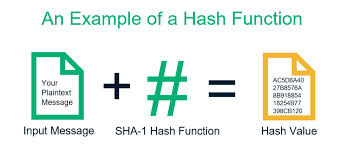
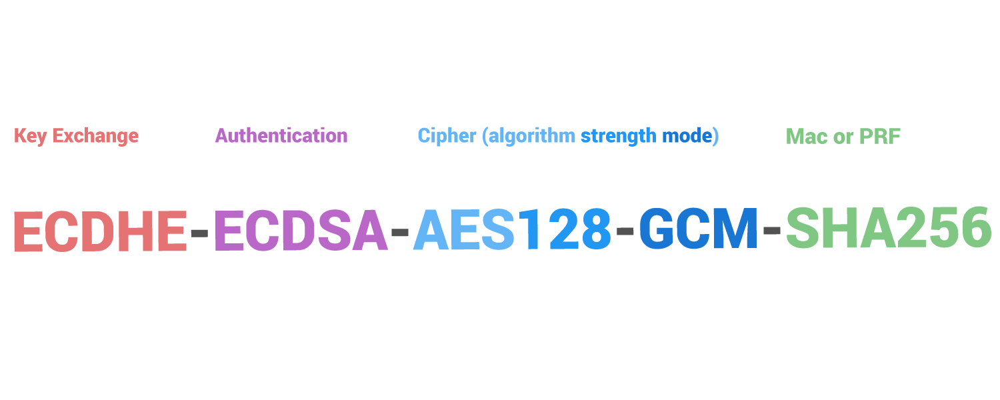

Authentication/Authorization
Best Practices + Considerations/Mitigations + Implementing Passport.js
Objectives
- Authentication and Authorization
- Limitations of HTTP-Native Authentication
- Third-Party Authentication
- Considerations
- Password Configuration
- Securely Storing Passwords - Hashing and Salting Passwords
- Multifactor Authentication
- Mitigations
- Brute Force Attacks
- TLS/SSL Handshake
- Certificate Authorities
- Understanding Passport.js
- Strategies, Implementation & Initialization
- Sessions and Cookies using Passport.js
- Temporary Storage - localStorage
Question 1
Which of the following is not a authentication choice primarily used in applications?
- A. Session Based Authentication
- B. JWT Authentication
- C. OAuth and OpenID
- D. Http-Native Authentication
Question 2
If a Hashing algorithm encypts your password, what does salting your password do ?
- A. Salt generates a private key that is saved to the database
- B. Salt adds an element of randomness to the hashing algorithm
- C. Salt checks the end-users password with what is generated via the hashing algorithm
- E. None of the options presented
Authentication + Authorization
What is the difference?
Hypertext Transfer Protocol

an application layer protocol designed to transfer information between networked devices and runs on top of other layers of the network protocol stack.
http
- protocol for transmitting hypermedia documents, such as HTML[Data-in-Transit - Plain text]
https
- is encrypted in order to increase security of data transfer [Data-in-transit - cipher text]
http/2
- modifies how the data is formatted (framed) and transported between the client and server, both of which manage the entire process, and hides all the complexity from our applications within the new framing layer
HTTP/2 overview
The primary goals for HTTP/2 are to reduce latency by enabling full request and response multiplexing, minimize protocol overhead via efficient compression of HTTP header fields, and add support for request prioritization and server push.

Encryption
Encryption Algorithm takes input data and scrambles it by using an encryption key - a secret between two parties
Symmetric
- - Uses the same key to encrypt and decrypt data
- Operate as block ciphers they break the input data into fixed-size blocks that can be individually encrypted
Asymmetric
- - Uses different keys to encrypt and decrypt data.
- Sometimes called public-key cryptography the encryption key (public key) can be published; only the decryption key (private key) needs to be kept secret.
Symmetric vs. Asymmetric
Visual without going into much detail

Hash Functions
Cryptographic hash functions which can be thought of as encryption algorithms whose output cannot be decrypted.
Using hashing algorithms is typically how passwords are stored in a database. The web server store the hashed value of the password in the database but will deliberately forget the actuall password value.
What is this below?
ECDHE-ECDSA-AES128-GCM-SHA256
Cipher Suites
A set of algorithms used to secure communication - Consist of three separate algorithms
key-exchange algorithm
asymmetric encryption algorithm used to exchange secret keys
Symmetric algorithm
block cipher designed for encrypting the content of TCP packets
MAC Algorithm
authenticating the encrypted messages.
TLS Handshake Steps
- 1) Determines version of TLS and list cipher suites.
- 2) Webserver selects the most secure cipher suite it can support and instructs browser to use those algorithms for comm.
- 3/4) Same time as step 2, the server passes a digital certificate, containing the server name, the certificate authority(who validates Authenticity)
- 5) Browser verifies authenticity with certificate authorities
- 6) The two machines generate a session key that will be used to encrypt the TLS conversation
- 7) Session specifications are set and encrypted communication can take place

Aproximate time it takes to complete TLS Handshake?
- A. About 300 - 400ms
- B. 2 - 3 seconds
- C. About 1 second
- D. 50 - 150ms
- E. 500 - 800ms
Digital Certificates
Suggested Reading
- Forthcoming